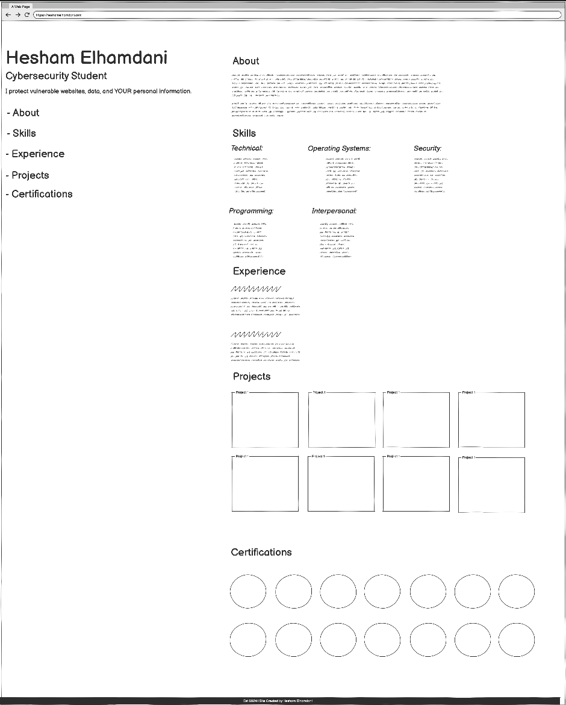
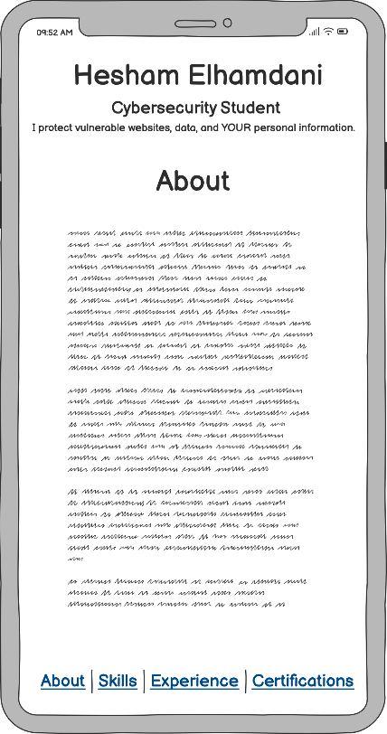
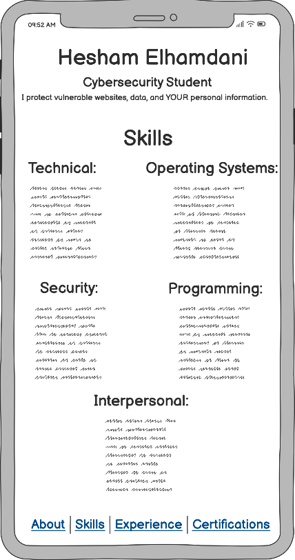
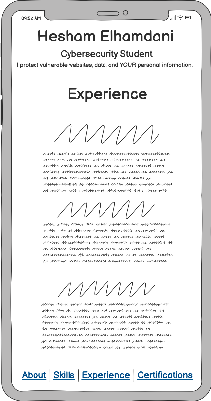
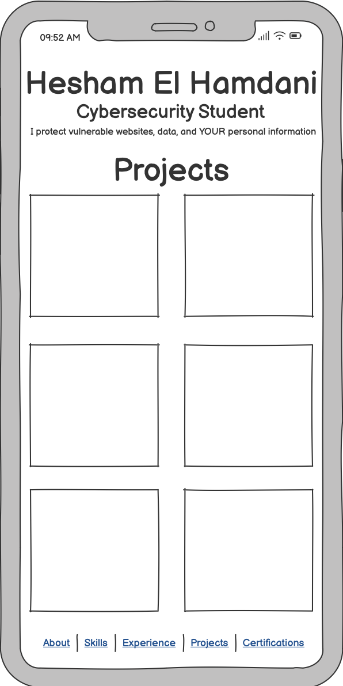

Milestone 2: Personal Website Project!
Desktop View:
This is the Desktop View of my project. It has different functionalities. The left of the page is fixed and does not scroll. While the right does!

A quick introduction to who I am and my background in web development. This section is designed to give visitors a sense of my personality and professional goals.This is the about me of my Mobile Display! This part shows my about me description. The Nav bar is on the bottom while you can scroll to the next page!
Feature: Smooth Scroll to Skills.

A comprehensive list of both my technical abilities, like programming languages and tools, and soft skills, such as teamwork and problem-solving. This section highlights the skills I bring to any project and how I can contribute to a team’s success.
Feature: Scrolls to Experience

An overview of my previous job roles, main responsibilities, and key achievements. It highlights how my experience has shaped my skills and abilities.
Feature: Scrolls to Projects

A portfolio of my past work, with images and descriptions for each project. This showcases the real-world application of my skills.
Features: Scrolls to Certifications.

A display of my certifications with brief explanations of each. This showcases my commitment to learning and professional growth.
Feature: Scrolls to the end